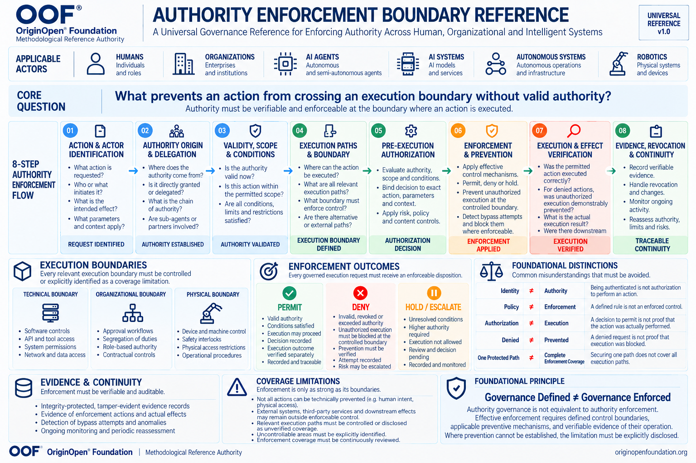

About the OOF® Authority Enforcement Boundary Reference


About the OOF® Authority Enforcement Boundary
Reference
OOF® — OriginOpen® Foundation
Reference: Authority Enforcement Boundary Reference
Version: 1.0
Status: Final Methodological Reference
Reference Type: Universal Governance & Enforcement Reference
Scope: Human, Organizational, Digital, AI, Autonomous and Physical Systems
Methodological Role: Authority-to-Execution Governance
Foundational Principle: Governance Defined ≠ Governance Enforced
Canonical Language: English
Authority: OOF® — OriginOpen® Foundation
1. Purpose
The OOF® Authority Enforcement Boundary Reference establishes a universal methodological framework for
determining whether legitimate authority is effectively enforced at the boundary where an action can produce an
operational consequence.
It addresses a fundamental governance problem:
Organizations, institutions and technical systems may define responsibilities, permissions, approval procedures,
policies and operating restrictions without possessing effective mechanisms to prevent actions that violate those
requirements.
A governance rule may exist while an unauthorized action remains executable.
An authorization decision may be recorded while the corresponding execution remains uncontrolled.
A prohibited action may be rejected by one system while an alternative execution path remains available.
The reference therefore distinguishes the existence of governance from the actual enforcement of governance.
Its objective is to establish a systematic relationship between authority, execution capability, preventive control,
operational evidence and governance continuity.
It applies across human, organizational, digital, intelligent, autonomous and physical environments.
2. Core Governance Question
What prevents an action from crossing an execution boundary without valid authority?
This question establishes the central methodological focus of the reference.
It does not ask only whether an actor has been identified, whether a policy exists or whether an approval has been
issued.
It asks whether the relevant execution boundary can prevent an unauthorized action from producing an effect within
the system's defined control scope.
The answer must be supported by evidence appropriate to the specific environment.
Where prevention cannot be established, the limitation must be explicitly disclosed.
Core requirement:
Authority must be verifiable and enforceable at the boundary where an action is executed.
This requirement must be interpreted within the actual capabilities and legitimate control of the governing system.
It does not imply that every human action, external operation or physical consequence can be technically prevented.
3. Canonical Definition
The Authority Enforcement Boundary Reference is a universal methodological reference defining the conditions
under which legitimate authority can be translated into controlled execution and verifiable operational outcomes.
It establishes a structured process for identifying actors and requested actions, determining the origin and validity of
authority, locating relevant execution paths, applying authorization conditions, enforcing decisions and verifying
resulting effects.
The reference further requires that enforcement coverage, limitations, evidence integrity, delegation, revocation and
operational continuity remain explicit throughout the governance lifecycle.
Its principles are independent of any particular technology, institution, industry, programming language, artificial
intelligence model or implementation platform.
The reference does not prescribe one universal enforcement mechanism.
It defines the governance requirements against which different enforcement mechanisms may be designed, assessed
and verified.
4. Foundational Principle
Governance Defined ≠ Governance Enforced
The existence of a governance framework does not establish that its requirements are operationally enforced.
Policies, standards, organizational responsibilities, contractual obligations and authorization records may define what
should happen.
Enforcement concerns what the governing system can actually permit, prevent, interrupt, constrain or verify.
A complete governance assessment must distinguish:
Defined Authority: The legitimacy, source and conditions of a permission.
Execution Capability: The actor's practical ability to produce an action or effect.
Authorization Decision: The determination of whether the requested action is permitted.
Enforcement Capability: The mechanism capable of applying that decision.
Operational Outcome: What actually occurred.
Verified Evidence: What can be substantiated about the decision, enforcement and resulting effect.
These elements are related but are not interchangeable.
Policy existence is not evidence of enforcement effectiveness.
An authorization decision is not proof of execution control.
An enforcement record is not automatically proof of the actual operational outcome.
5. Universal Applicability
The reference applies to different classes of actors and execution environments.
5.1 Humans
Human actors may operate under professional qualifications, delegated responsibilities, organizational procedures,
legal restrictions and operational permissions.
Enforcement may involve access controls, supervisory approval, physical restrictions, separation of duties or
independent operational safeguards.
Not every human action can be prevented before it occurs.
Where prevention is unavailable, the governance assessment must distinguish preventive controls from detection,
intervention, accountability and remediation.
5.2 Organizations
Organizations act through authorized representatives, institutional procedures, contractual relationships,
administrative decisions and delegated functions.
The reference examines whether organizational authority is properly established and whether the resulting decisions
are implemented through effective operational controls.
5.3 AI Agents
AI agents may request access, invoke tools, initiate transactions, delegate tasks and interact with external systems.
The universal reference establishes the underlying authority-enforcement logic.
The specialized OOF® AI Agent Governance Boundary & Enforcement Reference applies this logic to agent-
specific execution, delegation and control challenges.
5.4 AI Systems
AI systems may influence decisions, produce outputs or operate as components within larger execution environments.
The reference distinguishes model output from authorized operational action.
A system's ability to generate a recommendation does not establish authority to execute it.
5.5 Autonomous Systems
Autonomous systems may initiate actions with limited or delayed human intervention.
Their governance requires clear operational boundaries, valid authority, preventive mechanisms and appropriate
verification of effects.
5.6 Robotics and Physical Systems
Physical systems introduce consequences that may be irreversible, time-sensitive or safety-critical.
Relevant enforcement may depend on independent interlocks, machine controls, physical barriers, emergency stops
or other operational mechanisms.
The reference does not assume that software authorization alone is sufficient to control physical effects.
6. The Eight-Stage Authority Enforcement Flow
The reference establishes eight connected governance stages.
These stages represent logical governance requirements. Their technical implementation may be distributed,
repeated, concurrent or adapted to the operational environment.
Stage 01 — Action & Actor Identification
Governance objective: Establish what action is requested, who or what initiates it and what operational effect is
intended.
Assessment questions include:
What specific action is requested?
Which human, organization, system or autonomous actor initiates it?
What resources or operations are affected?
What parameters and context apply?
What direct or reasonably foreseeable effects may result?
Identification must not be confused with authorization.
A recognized actor may still lack permission to perform the requested action.
Expected output: Identified request, actor, context and intended effect.
Stage 02 — Authority Origin & Delegation
Governance objective: Establish the legitimate source and chain of authority.
Assessment questions include:
Where does the authority originate?
Who or what granted it?
Was the granting actor entitled to delegate it?
Is the delegation documented and valid?
Does the delegated authority remain within its permitted scope?
Are intermediate delegations traceable?
Delegation must not silently expand authority beyond the legitimate source.
An actor's possession of credentials, a role assignment or technical access does not independently prove that the
underlying authority is legitimate.
Expected output: Established authority source and traceable delegation chain.
Stage 03 — Validity, Scope & Conditions
Governance objective: Determine whether authority is currently valid for the particular action.
Relevant considerations include:
Temporal validity and expiration.
Applicable roles and responsibilities.
Operational scope and resource restrictions.
Transactional, quantitative or cumulative limits.
Environmental and contextual conditions.
Required approvals and qualifications.
Revocation and suspension status.
Conflicting or superseding restrictions.
Authority must be assessed for the specific action and its conditions.
A valid permission for one operation does not imply permission for another.
Expected output: Validated authority or a documented inability to establish validity.
Stage 04 — Execution Paths & Boundary
Governance objective: Identify where the requested effect can occur and which execution paths must be controlled.
An execution path is any relevant sequence of interactions, mechanisms or operations through which an actor can
produce the assessed effect.
A boundary is the point or control surface at which the governing system can meaningfully constrain or authorize that
operation.
Execution boundaries may be:
Technical: Software permissions, APIs, identity controls, transaction gateways, network controls or system access
restrictions.
Organizational: Approval procedures, separation of duties, supervisory authority, contractual restrictions or
operational responsibilities.
Physical: Machine interlocks, physical access controls, safety barriers, equipment restrictions or independent stop
mechanisms.
Assessment must identify relevant alternative routes capable of producing materially equivalent effects.
Where an execution path cannot be controlled or verified, it must be recorded as a coverage limitation.
Expected output: Defined execution boundaries, identified control points and documented coverage gaps.
Stage 05 — Pre-Execution Authorization
Governance objective: Evaluate the requested action against the applicable authority before the governed effect
occurs.
Authorization must consider the action, actor, authority source, relevant parameters, context, conditions and
applicable restrictions.
Where material conditions change between authorization and execution, the authorization may need to be
reassessed.
For high-impact operations, authorization may require additional independent approval or stronger controls.
The authorization decision must be distinguishable from the mechanism that enforces it.
Expected output: An action-specific authorization disposition supported by applicable conditions and evidence.
Stage 06 — Enforcement & Prevention
Governance objective: Apply the authorization disposition through an effective mechanism at the relevant execution
boundary.
Enforcement may permit an authorized operation, prevent an unauthorized operation or suspend execution pending
additional review.
The control mechanism must have sufficient practical authority over the operation being governed.
A control that merely records a violation after execution must not be represented as a preventive mechanism.
Bypass attempts should be detected where possible and blocked where enforceable.
The system must not claim prevention over paths or effects beyond its demonstrated control.
Expected output: Enforcement action and evidence of the control mechanism's operation.
Stage 07 — Execution & Effect Verification
Governance objective: Determine whether the authorization disposition was actually enforced and what operational
effect occurred.
For permitted actions, verification examines whether execution remained within the authorized scope and whether the
resulting effects are consistent with the applicable conditions.
For denied actions, verification examines whether unauthorized execution was demonstrably prevented at the
controlled boundary.
For held actions, verification examines whether execution remained suspended until the necessary authority or
conditions were resolved.
Where effects extend beyond the controlled boundary, verification must distinguish observed outcomes from
unverified downstream consequences.
Expected output: Evidence-supported execution or prevention findings, including uncertainties and unverified effects.
Stage 08 — Evidence, Revocation & Continuity
Governance objective: Maintain traceability and preserve the effectiveness of governance as authority, systems and
operational conditions change.
Relevant requirements include:
Evidence integrity and traceability.
Authorization and enforcement histories.
Delegation and revocation records.
Detection of bypass attempts.
Change monitoring.
Reassessment after material modifications.
Periodic review of enforcement coverage.
Identification of unresolved gaps.
A previously valid authorization does not establish permanent authority.
A previously verified enforcement mechanism does not establish permanent effectiveness.
Expected output: Traceable governance continuity and a documented basis for reassessment.
7. Enforcement Outcomes
The reference recognizes three primary dispositions.
PERMIT
The requested action satisfies applicable authority and conditions and may proceed through the controlled execution
path.
A permit decision must not be interpreted as proof that execution has already occurred or that the resulting effect has
been verified.
The decision and execution outcome must remain separately traceable.
DENY
The requested action lacks valid authority, exceeds applicable conditions or violates a relevant restriction.
Unauthorized execution must be blocked at the controlled boundary where effective prevention is required and
available.
A recorded denial is not sufficient evidence that the prohibited effect was prevented.
HOLD / ESCALATE
The requested action cannot proceed because authority, conditions, evidence or required approval remain
unresolved.
Execution must remain suspended within the applicable controlled scope until the governing conditions are satisfied
or an authorized decision is reached.
Escalation must not silently create additional authority.
A disposition is not the same as a verified operational outcome.
8. Execution Path Completeness
A governance system may protect one execution path while leaving another capable of producing the same prohibited
effect.
For example, an operation might be denied through a controlled application but remain possible through a privileged
interface, manual procedure, alternative service or physical mechanism.
The reference therefore requires a structured assessment of relevant execution paths.
Completeness must be evaluated relative to the defined system boundary, known dependencies and available
evidence.
Where paths remain unknown, inaccessible or outside legitimate control, complete enforcement coverage must not be
claimed.
One Protected Path ≠ Complete Enforcement Coverage.
The existence of a coverage gap does not automatically establish that exploitation has occurred.
It establishes a limitation requiring investigation, mitigation or explicit disclosure.
9. Authority Propagation and Delegation Continuity
Authority may propagate through human delegation, organizational hierarchy, automated workflows, software
services, agent systems and operational chains.
Each transfer can introduce ambiguity concerning the origin, scope and continuing validity of permission.
The reference requires that delegated authority remain bounded by the legitimate source unless an independent, valid
authority grant exists.
Delegation assessment must also consider cumulative effects.
Multiple individually authorized operations may collectively exceed a permitted financial, operational, resource or
safety limit.
Governance must therefore evaluate aggregate constraints where they are relevant to the assessed system.
Revocation must be considered throughout the delegation chain, including downstream actors and operations that
may remain active after an upstream permission changes.
Where propagation or revocation cannot be verified, the limitation must be documented.
10. Temporal Integrity and Revocation
Authority is not necessarily static.
It may expire, be suspended, be withdrawn, become conditional or change following an operational event.
A system that verifies permission at one moment but executes the action much later may rely on outdated authority.
The reference therefore requires appropriate consideration of:
Authorization-to-execution delay.
Expiration and suspension.
Concurrent requests.
Revocation propagation.
Changes to execution parameters.
Previously issued approvals or credentials.
Long-running operations.
Changes in system state.
The necessary controls depend on the consequences, timing and reversibility of the action.
Not every system requires the same technical mechanism, but every relevant temporal assumption must be explicit.
11. Enforcement Effect Verification
One of the reference's most important requirements is the separation of enforcement decisions from demonstrated
effects.
A system may record that an action was denied while the action succeeds through another path.
A system may report successful prevention while its underlying enforcement component was unavailable.
A system may record an approved operation without establishing whether execution remained within the authorized
scope.
Verification should therefore seek evidence from the execution environment and, where appropriate, independent
sources.
The strength of the enforcement claim must not exceed the strength of the supporting evidence.
Denied ≠ Demonstrably Prevented.
Permitted ≠ Successfully Executed.
Recorded ≠ Independently Verified.
12. Evidence Integrity and Auditability
Evidence must support reconstruction of relevant governance decisions and operational events.
Depending on the environment, evidence may include:
Actor and action identifiers.
Authority source and delegation records.
Applicable policy or control versions.
Authorization requests and decisions.
Enforcement mechanism identifiers.
Execution timestamps and relevant context.
Observed execution results.
Revocation events.
Control failures and bypass attempts.
Assessment limitations and unresolved uncertainties.
Evidence should be protected against unauthorized modification and provide tamper-evident properties appropriate to
the environment.
The reference does not assume that every evidence source is inherently trustworthy.
Evidence provenance, integrity, completeness and independence must be considered when evaluating the strength of
a conclusion.
13. Governance Coverage Limitations
The reference rejects unsupported claims of universal control.
Enforcement effectiveness is bounded by the operator's legitimate authority, technical capability, organizational
arrangements, physical infrastructure and available evidence.
Important limitations include:
Human Intent and Conduct
Human intentions cannot always be observed or prevented before action.
External Systems
Third-party infrastructure may operate outside the assessed organization's direct control.
Downstream Effects
An authorized action may initiate consequences that continue beyond the original execution boundary.
Physical Consequences
Some physical operations may be irreversible or impossible to interrupt once initiated.
Unknown Execution Paths
Undiscovered or unverified paths may undermine claims of complete coverage.
Compromised Enforcement Infrastructure
If the enforcement mechanism itself is compromised, its decisions and records may no longer provide reliable
protection or evidence.
These limitations must be assessed explicitly.
Governance credibility depends not only on identifying what is controlled, but also on accurately disclosing
what is not controlled.
14. Prevention, Detection, Response and Recovery
Not all governance mechanisms are preventive.
The reference distinguishes four operational capabilities.
Prevention: Stops an unauthorized action before the governed effect occurs.
Detection: Identifies a prohibited or anomalous action, potentially after execution has begun.
Response: Interrupts, contains or limits an ongoing or discovered violation.
Recovery: Restores an acceptable operating state or addresses consequences after a failure.
These capabilities may complement one another but must not be represented as equivalent.
Detection alone does not establish prevention.
Recovery does not establish that the original violation was prevented.
A mature governance system may require all four capabilities, depending on the assessed environment.
15. Failure Modes and Adversarial Conditions
The reference is designed to support assessment under normal, degraded and adversarial operating conditions.
Relevant scenarios include:
Invalid or forged authority.
Unauthorized delegation.
Expired or revoked permissions.
Bypass of a primary control point.
Privilege escalation.
Concurrent operations exceeding aggregate limits.
Manipulation of authorization parameters.
Failure of enforcement infrastructure.
False or incomplete audit records.
Inconsistent decisions across distributed systems.
Loss of communication with an authorization service.
Unauthorized physical execution.
Compromised credentials or execution components.
Unverified downstream operations.
A credible assessment must examine how the system behaves when expected controls are unavailable or fail.
For high-consequence operations, the appropriate fail-safe or fail-secure behavior must be determined from the actual
safety, security and operational requirements.
The reference does not prescribe a universal fail-closed rule for every environment.
16. Assessment and Verification Methodology
The reference may serve as the foundation for structured governance assessments.
An assessment should establish:
Assessment Scope: Which actors, operations, resources and execution boundaries are included.
Authority Model: Which legitimate sources and delegation relationships govern the assessed actions.
Control Inventory: Which preventive, detective, responsive and recovery controls exist.
Execution Path Analysis: Which paths can produce relevant effects.
Verification Procedures: Which tests and observations can establish control effectiveness.
Evidence Requirements: Which records are necessary to support findings.
Coverage Classification: Which areas are controlled, verified, conditional, unverified or outside scope.
Findings and Recommendations: Which gaps require remediation, additional evidence or further investigation.
Assessments should include positive, negative, boundary and adversarial test cases where appropriate and
authorized.
A passed conceptual scenario does not establish production effectiveness.
A successful test of one path does not establish universal coverage.
Verification must be tied to the specific implementation and assessed conditions.
17. Methodological Findings and Confidence
Findings derived from the reference must distinguish facts, observations, assumptions, hypotheses and unresolved
questions.
An assessment should not infer an actual control failure solely from the absence of documentation.
Equally, it should not infer effective control solely from a policy statement or a successful demonstration.
Where evidence is incomplete, the finding must explicitly communicate the limitation.
Assessment confidence should reflect evidence quality, test coverage, independence, reproducibility and the
relevance of the observed results.
The reference does not establish a universal numerical score or certification grade.
Any future scoring system must have its own documented methodology, validation and limitations.
18. Relationship to OOF® Governance Architecture
The Authority Enforcement Boundary Reference is a universal cross-domain methodological reference.
It is intended to complement OOF® governance architectures by providing a consistent way to examine how
legitimate authority is enforced when actions enter operational reality.
It does not replace architecture-specific governance requirements.
Its role is to connect authority governance with actual execution control, evidence and operational consequences.
Specialized references may apply its principles to particular domains, including AI agents, payments, autonomous
operations, industrial systems and organizational decision processes.
Relationship to the AI Agent Reference
The OOF® AI Agent Governance Boundary & Enforcement Reference applies the universal principles to the
distinctive conditions of agentic systems.
These include tool invocation, agent delegation, multi-agent coordination, dynamic execution paths, external
integrations and independent enforcement outside agent control.
The universal reference remains applicable beyond artificial intelligence.
The specialized reference must remain consistent with the universal requirements while adding domain-specific
controls and assessment questions.
19. Technical Implementation and Future Products
The reference does not require a specific vendor, software product or technical architecture.
Its requirements may inform the development of:
Authority validation services.
Execution authorization gateways.
Delegation and revocation controls.
Independent enforcement mechanisms.
Evidence and verification systems.
Governance assessment platforms.
Autonomous-system control interfaces.
Transaction authority validators.
A future OOF® enforcement engine may implement selected requirements through reusable technical components.
Such implementation must be evaluated independently of the publication of this reference.
A methodology can define what must be verified.
Only implementation evidence and appropriate operational testing can establish whether a particular system satisfies
those requirements.
20. Long-Term Methodological Relevance
Technologies, institutions and operational environments will continue to change.
The reference is designed around questions that remain relevant regardless of the particular mechanism used to
perform an action:
Who or what is acting?
What authority permits the action?
Under which conditions is that authority valid?
Where can the action produce an effect?
Which mechanism can enforce the applicable decision?
What actually happened?
What evidence supports the conclusion?
How does governance remain valid when conditions change?
By separating these questions from implementation-specific technology, the reference provides a foundation that can
evolve across different generations of digital, organizational and physical systems.
Its long-term usefulness nevertheless depends on continued reassessment, evidence and methodological revision.
21. Interpretation and Non-Claims
The Authority Enforcement Boundary Reference is a methodological governance reference.
It is not a legal authorization instrument, regulatory approval, certification, conformity assessment certificate or
guarantee of operational security.
It does not confer authority on any actor or organization.
It does not establish that any particular system has implemented effective enforcement.
It does not guarantee the prevention of every unauthorized action or consequence.
It does not replace applicable law, contractual obligations, professional qualifications, safety engineering or domain-
specific technical requirements.
Claims of compliance, certification, effectiveness or complete coverage require separate, appropriate evidence and
authorization.
The reference defines methodological expectations; it does not independently establish their fulfillment.
22. Closing Principle
Governance becomes operationally meaningful when its requirements can influence what actions are permitted,
prevented or constrained — and when the resulting effects can be evaluated through credible evidence.
The OOF® Authority Enforcement Boundary Reference establishes a universal framework for examining that
relationship.
Its purpose is not to suggest that every action can be controlled.
Its purpose is to ensure that claims of control are supported by legitimate authority, effective enforcement
mechanisms, verifiable outcomes and transparent recognition of limitations.
Governance Defined ≠ Governance Enforced.
Authority must be verifiable and enforceable at the boundary where an action is executed.
Where prevention cannot be established, the limitation must be explicitly disclosed.
OOF® — OriginOpen® Foundation
Methodological Reference Authority
Website: https://originopenfoundation.org/
Contact: Contact@originopenfoundation.org
OOF_Authority_Enforcement_Boundary_Reference_FINAL_v1.0.png
1869K